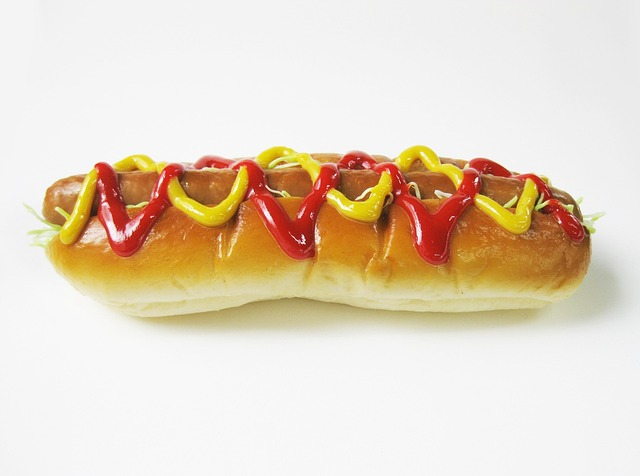

Hot Dogs

Description: this is a recipe for air fryer hot dogs that are nice,
crispy, and juicy! Even better, it only takes a few minutes to prepare and
cook. This recipe will provide 4 servings of delicious hot dogs.
Ingredients
- 4 hot dog buns
- 4 hot dogs
Directions
- Preheat an air fryer to 400 degrees F (200 degrees C).
-
Place buns in a single layer in the air fryer basket; cook in the
preheated air fryer until crisp, about 2 minutes. Remove buns to a
plate.
-
Place hot dogs in a single layer in the air fryer basket; cook for 3
minutes. Serve hot dogs in toasted buns.